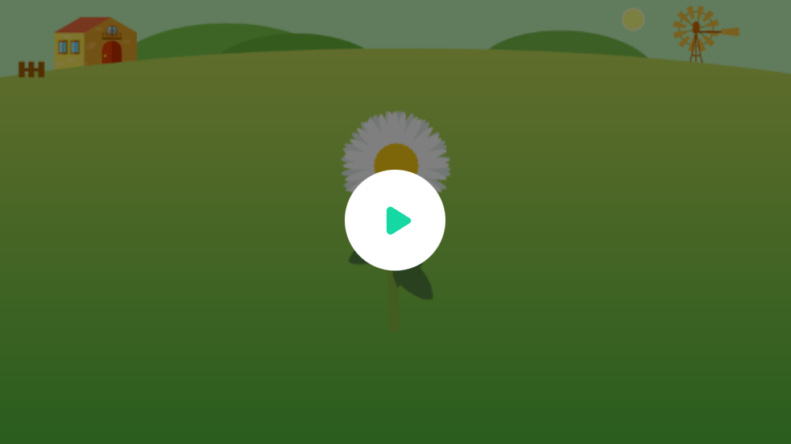
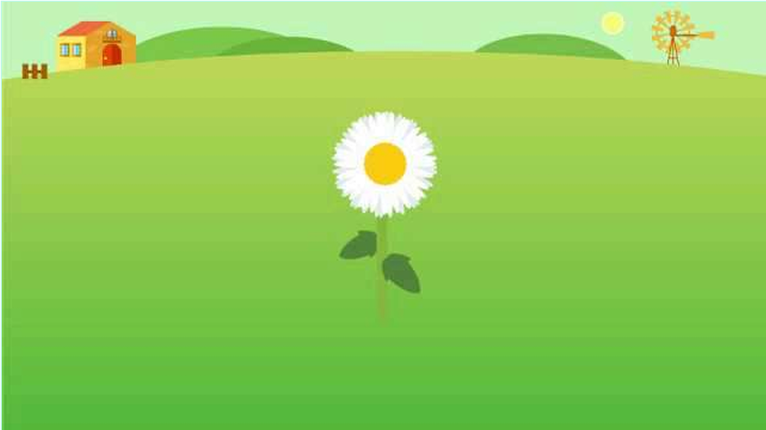
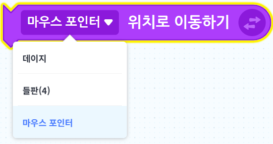
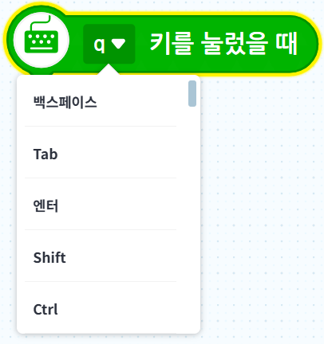
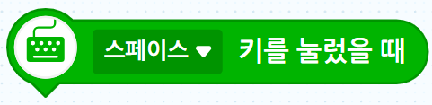

완성 작품 미리보기
마우스와 키보드를 이용해 여러 가지 꽃으로 꽃밭을 꾸며 봅니다.

풀 배경 위에 크기와 종류가 다른 꽃을 심은 완성 작품
수업 목표
✅ 마우스를 따라 움직이는 꽃 만들기
✅ 클릭한 위치에 꽃 심기
✅ 방향키로 꽃 크기 바꾸기
✅ 스페이스바로 꽃 종류 바꾸기
오늘의 미션
풀 배경 위에 크기와 종류가 다른 꽃을 10개 이상 심어 나만의 꽃밭을 완성합니다.
핵심 원리: 마우스 클릭과 키보드 입력은 프로그램에 명령을 전달하는 입력입니다.
1풀 배경과 꽃 준비하기
지난 시간에는 꽃잎을 반복해서 찍고 회전하여 꽃송이를 만들었습니다. 이번 시간에는 마우스와 키보드를 이용해 원하는 곳에 여러 가지 꽃을 심어 봅니다.
- 기존 엔트리봇 오브젝트를 삭제합니다.
- 오브젝트 추가하기를 클릭합니다.
- 라이브러리 선택 → 배경 → 자연에서 풀 배경을 추가합니다.
- 라이브러리 선택 → 식물 → 꽃에서 데이지 오브젝트를 추가합니다.

주의: 실행 중에는 작품을 수정할 수 없습니다. 먼저 정지하기를 누른 후 수정합니다.
2꽃이 마우스를 따라 움직이게 하기
꽃이 마우스 포인터를 계속 따라 움직이도록 블록을 연결합니다.



만드는 방법: 엔트리봇 위치로 이동하기 블록의 드롭다운을 클릭한 뒤 마우스 포인터를 선택하면 마우스 포인터 위치로 이동하기가 됩니다.
▶ 시작하기 버튼을 클릭했을 때
└ 계속 반복하기
└ 마우스 포인터 위치로 이동하기
확인 질문: 마우스를 움직이면 꽃은 어떻게 움직이나요?
정답: 꽃이 마우스 포인터를 따라 움직입니다.
3클릭한 위치에 꽃 심기
마우스를 클릭할 때마다 현재 위치에 꽃이 남도록 만듭니다.
▶ 마우스를 클릭했을 때
└ 도장찍기
실습 미션: 장면의 서로 다른 위치에 꽃을 5개 심어 봅니다.
4방향키로 꽃 크기 바꾸기
위쪽 방향키를 누르면 꽃이 커지고, 아래쪽 방향키를 누르면 꽃이 작아지도록 만듭니다.
블록 1


만드는 방법: q 키를 눌렀을 때 블록의 드롭다운을 클릭한 뒤 위쪽 방향키를 선택합니다.
▶ 위쪽 방향키를 눌렀을 때
└ 크기를 10만큼 바꾸기
▶ 아래쪽 방향키를 눌렀을 때
└ 크기를 -10만큼 바꾸기
꽃을 심기 전에 방향키를 눌러 원하는 크기로 바꿉니다.
실습 미션: 큰 꽃, 중간 꽃, 작은 꽃을 각각 한 개 이상 심습니다.
5스페이스바로 꽃 종류 바꾸기
꽃 오브젝트에 백일홍과 해바라기 모양을 추가합니다.
- 모양 탭에서 모양 추가를 클릭합니다.
- 식물 → 꽃에서 백일홍과 해바라기를 추가합니다.
- 명령 블록을 연결합니다.


▶ 스페이스 키를 눌렀을 때
└ 다음 모양으로 바꾸기
꽃의 변화: 데이지 → 백일홍 → 해바라기 → 데이지
실습 미션: 세 종류의 꽃을 모두 한 번 이상 심습니다.
연습 문제 1
꽃의 크기를 더 빠르게 바꾸기
문제: '크기를 10만큼 바꾸기'의 값을 20으로 바꾸어 실행해 봅니다.
생각 질문: 값을 크게 바꾸면 꽃의 크기는 어떻게 달라질까요?
정답: 키를 한 번 눌렀을 때 크기가 더 많이 변합니다.
연습 문제 2
다른 오브젝트로 꾸미기
꽃 대신 나비, 별, 과일 등 원하는 오브젝트를 추가해 봅니다.
| 새 오브젝트에 적용할 기능 | 내용 |
|---|
| 마우스 따라가기 | 마우스 포인터 위치로 이동합니다. |
| 클릭하여 도장찍기 | 클릭한 위치에 오브젝트를 남깁니다. |
| 방향키로 크기 변경 | 키보드 입력으로 크기를 바꿉니다. |
| 스페이스바로 모양 변경 | 다음 모양으로 바꿉니다. |
도전! 나만의 꽃밭 꾸미기
조건을 모두 만족하는 나만의 꽃밭을 만들어 봅니다.
| 조건 | 확인 |
|---|
| 꽃을 10개 이상 심기 | 장면에 꽃이 충분히 있는지 확인합니다. |
| 꽃 종류 3가지 이상 사용하기 | 데이지, 백일홍, 해바라기를 모두 사용합니다. |
| 크기가 다른 꽃 넣기 | 큰 꽃, 중간 꽃, 작은 꽃을 섞습니다. |
| 빈 곳과 가득 찬 곳을 알맞게 배치하기 | 꽃밭이 보기 좋게 균형을 맞춥니다. |
추가 도전
꽃이 아닌 오브젝트를 한 종류 더 넣어 꽃밭에 이야기를 만들어 봅니다.
예: 나비가 찾아온 꽃밭, 별이 피어나는 밤의 꽃밭, 과일이 열리는 신기한 정원
마무리
오늘 배운 내용:
- 마우스 위치를 프로그램에 입력하기
- 마우스 클릭을 명령으로 사용하기
- 키보드 입력으로 크기 바꾸기
- 오브젝트의 모양 바꾸기
컴퓨터는 마우스와 키보드의 입력을 받아 오브젝트의 위치, 크기, 모양을 바꿀 수 있습니다.